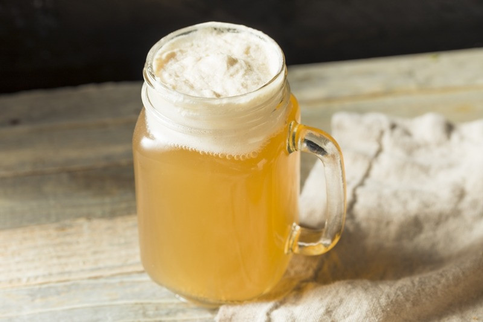

Bebidas
Bebidas
Cerveja amanteigada - Harry Potter
Ingredientes
- 500 ml de sorvete de creme ou baunilha
- 100 gr de manteiga em temperatura ambiente
- 1 xícara de chá de açúcar mascavo
- 1/2 colher de café de de cravo em pó
- Nóz moscada e gengibre em pó á gosto
- 1/2 colher de café de canela em pó
- 1 garrafa de espumante
Modo do preparo
- Misture bem a manteiga com o açúcar e os condimentos, acrescente o sorvete e misture.
- Leve ao freezer até congelar.
- Na hora de servir, coloque 2 a 3 colheres da mistura congelada em um copo, esquente o espumante até começar a ferver, e despeje em cima, depois mexa.
Frappuccino

Ingredientes
- 1 copo de café coado concentrado
- 1 colher de sopa de açúcar
- 1 colher de sopa de chocolate em pó
- 1 copo de leite integral gelado
- Chantilly
Modo de preparo
- Despeje o café em forminhas de gelo e leve ao congelador.
- Depois que o café estiver congelado, em um liquidificador, bata-os com o chocolate em pó, leite integral e açúcar até ficar homogêneo.
- Para finalizar, despeje a calda de chocolate ou caramelo em um copo e sirva a bebida com chantilly no topo.
Mango Orange
ingredientes
- 2 mangas Haden maduras
- 2 laranjas pêra
- 2 colheres de sopa de vinho licoroso
- 1 lata de leite condensado de sua preferencia
- 1 colher de chá de raspas de laranja
Modo de preparo
- Descasque as mangas, corte-as em cubos e reserve.
- Faça as raspas de laranja e reserve.
- Descasque as laranjas e corte em pedaços.
- Coloque as frutas picadas em taças, regue com o vinho, cubra com leite condensado e as raspas de laranja.